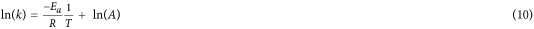
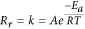
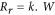

Abstract
The past two years have witnessed unprecedentedly rapid development of organic–inorganic halide perovskite–based solar cells. The solution–processability and high efficiency make this technology extraordinarily attractive. The intensive investigations have accumulated rich experiences in the perovskite fabrication; while the mechanism of the chemical synthesis still remains unresolved. Here, we set up the chemical equation of the synthesis and elucidate the reactions from both thermodynamic and kinetic perspectives. Our study shows that gaseous products thermodynamically favour the reaction, while the activation energy and “collision” probability synergistically determine the reaction rate. These understandings enable us to finely tune the crystal size for high-quality perovskite film, leading to a record fill factor among similar device structures in the literature. This investigation provides a general strategy to explore the mechanism of perovskite synthesis and benefits the fabrication of high–efficiency perovskite photoactive layer.
Introduction
The recent exploitation of organic–inorganic hybrid perovskite in solar energy conversion arouses new academic curiosity1,2, which is mainly stimulated by the achievable power conversion efficiency (PCE) exceeding 20%3,4, comparable to the conventional vacuum deposited thin film solar cells based on Si (21.2%), CIGS (20.8%) and CdTe (20.4%)4. The pioneering work utilizing methylammonium lead halide perovskite in dye sensitized solar cells showed a PCE of 3.8% and was further improved to 6.5%5,6, while both of them suffered from a common problem that the perovskite degraded easily in the liquid electrolyte. The stability was considerably improved after using solid hole transport material and the efficiency was boosted exceeding 9%7. In addition to the high PCE, another attractive characteristic of perovskite solar cell is the feasibility in solution-processed fabrication, which offers a cost–effective printable strategy for large–area device fabrication8,9. The “solution processing” usually begins with coating the precursor mixture on a substrate, followed by annealing the precursor film at an elevated temperature to evaporate the solvent, initiate the chemical reaction towards perovskite and facilitate the crystallization and film formation. This fabrication involves complicated solid-state reaction and crystallization procedures.
Typically, the perovskite adopts a chemical formula denoted by AMX3, where A is methylamine, M is metal element and X represents halide element10. The materials that meet the electrical and optical requirements for high–efficiency photovoltaic devices are organolead or organotin iodide based perovskites, with bromine or chlorine doping in some cases11,12,13,14. The chemical synthesis can be classified into two categories. One is via the reaction between MCl2 (M = Pb or Sn) and CH3NH3X (X = Br or I) with a molar ratio of 1:3. The preparation of CH3NH3PbI3-xClx film through reaction (1) is a typical example15. The other category of synthesis is by means of the reaction between MX2 (M = Pb or Sn, X = Br or I) and CH3NH3X (X = Br or I) with a molar ratio of 1:1, such as the reaction between PbI2 and CH3NH3I for the synthesis of CH3NH3PbI3 (reaction 2)7.

The reported high–efficiency devices are mostly based on these two reactions16,17. We thus choose them as model systems to probe the reaction mechanism. The past investigations have gained several lines of empirical evidences regarding the materials synthesis. First, the barriers for both of the reactions are quite low, enabling reaction at mild conditions, while the exact activation energies required for the reactions are unresolved. Second, in addition to the main product, the side products are unspecified, especially for reaction (1), which brings about ambiguity of the reaction mechanisms and impedes further improvement of the film quality for high-efficiency devices. Third, reactions (1) and (2) result in different film morphologies. Reaction (1) can easily lead to uniform films on a planar substrate, while reaction (2) usually generates branchlike crystals on a planar substrate in case the mesoporous scaffold is absent. This morphological difference is associated with chemical reaction, crystallization and film formation nature that are still remained undiscovered. Here, we first identify the products of the reaction and establish the chemical equations. Afterwards, we analyze the reaction from both thermodynamic and kinetic perspectives and discover their impacts on film formation behavior. With these understandings, a method to precisely control the crystal size domain for optimal device performance is developed, which ultimately leads to an improvement of the device efficiency by 22.3%.
Results and Discussion
To fabricate CH3NH3PbI3−xClx, a precursor solution containing PbCl2 and CH3NH3I with a molar ratio of 1:3 in dimethylformamide (DMF) was prepared (donated as “PbCl2 + 3CH3NH3I system”). The mixed solution was then spin–coated on TiO2 compact layer on an FTO–coated glass. The formation of final perovskite film was achieved by annealing at 100 oC for 45 min. X-ray diffraction (XRD) pattern shows typical (110) and (220) peaks centered at 14.1o and 28.4o (Fig. 1a)3,18. According to energy-dispersive X-ray spectroscopy (EDS, Supplementary Table 1), the chlorine content was found to be smaller than 2%, and sometimes undetectable. This indicates a very small value of x in the end product. It is usually suspected that the formation and subsequent sublimation (or decomposition) of CH3NH3Cl in the film accounts for negligible chlorine left in the final perovskite19,20. However, there has been no evidence for this assumption. Herein, we attempt to specify the gaseous product of the reaction. By analyzing the reaction given by (1), the gaseous products could be acidic HCl, HI, basic NH3, CH3NH2 or neutral CH3Cl, etc. To obtain a definite answer, we managed to separately collect the acidic or basic gases by filtering through acidic or basic media. Fourier transform infrared spectroscopy (FTIR) is used to characterize the vibrational modes of the collected gases in a gas cell. When the gas product was purged through NaOH powder, the spectrum (Fig. 1b) shows peaks at 2800-2961, 1467, 1140 and 750 cm−1, which are in agreement with the characteristic CH3 stretching, CH3 deformation, CH3 wagging and NH2 wagging vibrational modes of CH3NH2, respectively21. The standard spectrum from literature is provided in the Supplementary Fig. 1. Alternatively, the reaction product was filtered through P2O5 to collect the acidic gaseous products. FTIR measurement shows fingerprint similar to vibrational modes of HCl especially in the range 2840-3145 cm−1 (Fig. 1b and Supplementary Fig. 1). To confirm the identity of the reaction products, we conducted a test by annealing the film in an atmosphere containing either HCl or CH3NH2. Depending on the gas pressure of HCl or CH3NH2, the reaction speed can be retarded by certain extends. When the precursor film is annealed in an atmosphere containing NH3, the process is greatly accelerated and the reaction completes within 2 min (Supplementary Fig. 2). It is ascribed to the quick removal of HCl by combining with NH3. According to Le Chatelier’s principle, both HCl and CH3NH2 serve as the equilibrium shifting factors that resist the forward reaction. Therefore, in combination with the FTIR analysis, the volatile products are identified as HCl and CH3NH2. To inspect whether there is CH3NH3Cl sublimated, we tried to collect the product by covering a glass slide onto the precursor film. Upon heating, the volatile species can be deposited onto the upper slide. As a result, the XRD pattern of the collected substance matches that of the as-synthesized CH3NH3Cl (Fig. 1a). However, both our investigation (Fig. 2a) and literaturereport did not show diffraction peak of CH3NH3Cl during the reaction3,15,20. Therefore, the as-collected CH3NH3Cl is a product of the reaction between escaped HCl and CH3NH2.

a, XRD patterns of the final perovskite synthesized at 100 oC for 45 min, the solidified gaseous substance collected from the PbCl2 + 3CH3NH3I reaction system, and the as-synthesized CH3NH3Cl for comparison. b, FTIR spectra of gaseous product generated from the PbCl2 + 3CH3NH3I reaction system.

a, in situ XRD monitoring of the precursor film (PbCl2 + 3CH3NH3I system) after annealing at 60 oC for 20 min for pre-drying, and 100 oC up to 40 min, in which # indicates the unknown peaks and * indicates the diffractions from perovskite (CH3NH3PbI3). The XRD patterns are offset for easy observation. b, Enlarged (100) diffraction peak as in Fig. 2a. c, Normalized (200) diffraction peak as in Fig. 2a. d, Schematic illustration of the replacement of Cl− in the Cl-rich perovskite by I− for the formation of Cl-poor perovskite (the CH3NH3 ion at the corner of the cube is omitted), where the thermodynamically favourable process would finally lead to the formation of all-iodide perovskite CH3NH3PbI3.
Because of the generation of gaseous products, we also observed that if the reaction was conducted at a reduced pressure, the reaction would speed up because of the fast removal of the gaseous products. This is a typical characteristic of the solid-state reaction involving gaseous product generation. On the other hand, the reaction rate is greatly decreased when the reaction was performed in an enclosed system where the generated gas is retained in the system, indicating that the escape of gaseous product is a driving force for the reaction. To examine the reversibility of the reaction, we place a perovskite film facing a precursor film. The bottom precursor film was then heated up to 100 oC. The rationality behind this experiment is that HCl and CH3NH2 generated from the precursor film are able to enter into the upper pre-formed perovskite film and react with it. As a consequence, the surface of the perovskite film was observed to turn back to yellow. Furthermore, annealing of the yellow sample can again lead to the formation of the perovskite, indicating that the reaction between PbCl2 and CH3NH3I is reversible. In this case, the reaction depicted by (1) can be more precisely described by equation (3):

Since ΔG = ΔH − T ·ΔS (ΔG is the Gibbs free energy, ΔH is the enthalpy difference and ΔS is the entropy difference), the reduction of Gibbs free energy induced by the entropy increase becomes increasingly significant as the temperature increases. Apparently, the release of HCl and CH3NH2 favours the entropy increase and high temperature promotes the forward reaction.
To explore the reaction pathways, we apply in situ XRD to probe the crystal structure evolution–associated intermediate chemical reactions. The precursor film was firstly pre-dried at 60 oC. XRD measurement displays several sets of diffraction patterns (Fig. 2a). First, the diffraction peak at 11.99o can be ascribed to PbI220. However, we did not observe diffraction peak belonging to PbCl2. These two results indicate that an ion exchange between Cl- in PbCl2 and I- in CH3NH3I has occurred, described as reaction (4).

Second, the peaks at 15.53o and 31.37o can be assigned to the diffractions of CH3NH3PbCl3,22 suggesting that the reaction between PbCl2 and CH3NH3Cl has also happened along with the ion exchange as in reaction (5). There is also XRD diffraction peak at 14.02o corresponding to CH3NH3PbI3 observed at this stage, indicating the reaction (6).

The diffractions at 11.38o, 16.64o, 28.42o and 18.03o cannot be assigned to any perovskite or lead halide; these peaks are presumably associated with the complex intermediate phase that composed of Pb halide and the organic species (Pb-complex)23.
At the beginning of heating at 100 oC, the typical XRD diffraction pattern (Fig. 2a) of a perovskite at 14.02o, 28.27o, 31.75o and 43.06o becomes more pronounced, which is ascribed to the (100), (200), (210) and (300) plane with a cubic structure18. Prolonged heating leads to a gradual disappearance of the peaks of PbI2 and CH3NH3PbCl3, accompanied by the growth of the diffraction peaks of CH3NH3PbI3 (Fig. 2a,b), indicating that reaction (7) is also occurred. In this regard, the formation of CH3NH3PbCl3 at the initial stage is a kinetically favourable process when there are relatively higher concentrations of PbCl2 and CH3NH3Cl, while the formation of CH3NH3PbI3 is a thermodynamically favourable reaction24,25.

Another notable observation from the XRD pattern is that the (100) and (200) diffraction peaks downshift continuously during the annealing at 100 oC (Fig. 2b,c), which corresponds to the lattice constant increasing from 0.6300 nm to 0.6315 nm from the initial annealing at 100 oC till the end of the reaction. The ionic radius of Cl− and I− are 167 and 206 pm, so the increase in lattice parameter is ascribed to the replacement of Cl− by I− in the hybrid perovskite, through reaction (7) and (8) as indicated in Fig. 2d. In addition, the weak diffractions associated with Pb-complex at 11.38o, 16.64o, and 18.03o gradually disappears as a result of the consumption of Pb for the formation of perovskite at elevated temperature (Fig. 2a).

The kinetic factor that influences the reaction rate is usually reflected by the activation energy (Ea) of the reaction. To obtain Ea, we first of all explore a parameter that can quantify the reaction rate. Considering the nature of the solid-state reaction, the gas release speed is associated with the reaction rate. If we assume that the overall reaction is described by reaction (9) below, a complete transformation to the perovskite leads to a weight loss of 17.9% as the gaseous products escape. This complete transformation to a pure-iodide based perovskite is reasonable since prolonged heating often results in undetectable chlorine content, both observed in our investigations and in the literature20.

In the thermogravimetric analysis (TGA) of reaction (9), the precursor solution was pre-dried at 80 oC for 2.5 hours to evaporate the DMF out of the mixture (Fig. 3a and Supplementary Fig. 3). Subsequently, the precursor powder was heated to initiate the reaction. It should be noted that the amount of the reaction precursor for TGA measurement (milligram scale) is significantly greater than that for device fabrication, the latter of which is usually a thin layer of film of several hundred nanometers thick. Therefore, the required heating temperature for the reaction in the TGA measurement must be higher than the latter due to the temperature gradient inside the precursors. We thus recorded the reaction rate in the temperature ranging from 80 to 180 oC. We found that toward the end, the weight loss fraction reaches 15.2% (Fig. 3a), which is a little smaller than the theoretical weight loss fraction, possibly because the reaction has occurred during the pre-drying process. However, this would not influence the rationality of our method in that we quantify the gas release associated reaction rate at a specific temperature and duration.

a, The weight loss of the reaction precursors consists of PbCl2, CH3NH3I and DMF at 80 oC to evaporate the solvent, and 80–180 oC to initiate the reaction. b, Reaction rate–time plot of the PbCl2 + 3CH3NH3I reaction system at 150 oC. c, lnk–1/T plot of the reaction. d, The weight loss of the PbI2 + CH3NH3I system at 60 oC and 60–110 oC. e, Reaction rate–time plot of the reaction towards CH3NH3PbI3. f, lnk–1/T plot of the PbI2 + CH3NH3I system.
We thus plot the reaction rate (Rr) against time (t) to determine the order of the reaction. The constant reaction rate as a function of time (Fig. 3b) indicates that reaction (9) is a zero-order reaction. Hence, Rr = k (k is the rate constant of the forward reaction). The natural logarithm form of Arrhenius equation can be expressed by formula (10).
where A is the pre-exponential factor, Ea is the activation energy, and R is the universal gas constant. Therefore, from the ln(k) −1/T plot (Fig. 3c) we can calculate the value of −Ea/R from the slope. The value of Ea is then calculated to be 69 kJ mol−1. Generally, Ea value of a chemical reaction is in the 40–400 kJ mol−1 range. The small Ea explains the rapid reaction between PbCl2 and CH3NH3I even at a mild condition. Since the reactions (4), (5) and (6) are nearly instantaneously occurred after drying at 60 oC. The calculated Ea represents required energy for the conversion of Pb-complex, CH3NH3PbCl3 (reaction d), CH3NH3PbI3−xClx (reaction e), to CH3NH3PbI3.
Since the conversion towards final all-iodide perovskite is reversible and involves gaseous products generation, the increase in reactant would increase the distance for the gases diffusion out of the film. Furthermore, the increased diffusion length would increase the back reaction. An overall result is that the reaction rate did not show increment along with the increase of reactant amount. This is the reason why the formation of CH3NH3PbI3 displays zero-order reaction characteristics.
Different from the perovskite synthesis using PbCl2 and CH3NH3I as the precursors, the reaction between PbI2 and CH3NH3I is conducted in a 1:1 ratio to generate CH3NH3PbI3 without chlorine doping (denoted as “PbI2 + CH3NH3I system”). The electronic properties of the two kinds of perovskites and their film formability are quite different26,27, which in turn requires different device architecture for efficient energy conversion17. Here we focus only on the chemical perspective of the reaction. To quantify the reaction rate, we monitor the DMF releasing speed since a number of DMF molecules are coordinated with PbI228. We conducted the TGA experiment to determine the coordination ratio. After sufficiently pre-drying the perovskite precursor solution containing PbI2 and CH3NH3I at 60 oC, the yielded light yellow powder was heated at elevated temperature to facilitate the reaction. The weight loss of the reaction was found to be 10.2% (Fig. 3d). From theoretical calculation, a one-to-one coordination would result in the weight percentage of DMF being 10.5% according to reaction (11). Therefore, the weight loss due to the escape of DMF can be used to evaluate the reaction rate.

We then plot the reaction rate Rr (at constant temperature of 110 oC) against t to determine the order of the reaction (Fig. 3e). The plot fits well with a first order reaction. The Ea value is calculated to be 110 kJ mol−1 according to the ln(k) – 1/T plot (Fig. 3f), which is considerably higher than that of PbCl2 + 3CH3NH3I system (69 kJ mol−1). For the analysis of Ea, we characterized the dried mixtures of the two systems. It was found that the “PbCl2 + 3CH3NH3I” system forms poor crystallized product while the “PbI2 + CH3NH3I” system forms better crystallized material according the XRD characterization (Supplementary Fig. 4). Presumably, the barrier for the transformation from poor crystallized (amorphous) form to the perovskite is lower than that from well crystallized substance to the perovskite. This is the reason why the “PbCl2 + 3CH3NH3I” system possesses low Ea when compared with that of “PbI2 + CH3NH3I” system.
However, in the synthesis, the reaction speed of “PbI2 + CH3NH3I” system is much faster than that of “PbCl2 + 3CH3NH3I” system. To understand this issue, we consider A in the Arrhenius equation, which is the parameter to evaluate the effective collision in the chemical reaction. They are 9 × 1015 and 6 × 106 respectively for the “PbI2 + CH3NH3I” and “PbCl2 + 3CH3NH3I” systems according to Fig. 3c,f. The overall reaction speed is dependent on both A and Ea at a specific temperature on the ground of Arrhenius equation; this explains why the higher Ea in “PbI2 + CH3NH3I” system can still possess a faster reaction speed than “PbCl2 + 3CH3NH3I” system.
The “collision” probability is analyzed in Fig. 4. In the “PbCl2 + 3CH3NH3I” system, the gaseous species such as CH3NH2 and HCl would block the diffusion of the reactants (Fig. 4a), i.e. PbI2, Pb-complex, CH3NH3PbCl3, CH3NH3PbI3-xClx, and CH3NH3I, which retard the reaction speed. In the “PbI2 + CH3NH3I” system, according to the TGA result, the final molar ratio of the reactants is 1:1:1 of CH3NH3I:PbI2:DMF. The XRD characterization show crystallized structure (Supplementary Fig. 4). The diffraction pattern cannot be assigned to any perovskite or the precursor material. It is most likely a complex intermediate of CH3NH3I∙PbI2∙DMF. In this case, the following reaction mechanism is possible.

a, the “PbCl2 + 3CH3NH3I” system dried at 60 oC for 2 hrs. b, the “PbI2 + CH3NH3I” system dried at 60 oC for 2 hrs.
Since the complex is composed of reactants of CH3NH3I and PbI2, the reaction for the formation of CH3NH3PbI3 doesn’t require significant mass diffusion (Fig. 4b). The reaction speed is dependent on the concentration of the intermediate state, showing first-order reaction feature, where reaction rate  . The perovskite film synthesized by the reaction between PbI2 and CH3NH3I is featured as poor film formability as discussed in the introduction. The porous film leaves many channels for the DMF escape. Therefore, the release of DMF is not a rate determining step, in contrast to the “PbCl2 + 3CH3NH3I” system where the uniform and compact film could retain a high concentration of gaseous species resisting the forward reaction.
. The perovskite film synthesized by the reaction between PbI2 and CH3NH3I is featured as poor film formability as discussed in the introduction. The porous film leaves many channels for the DMF escape. Therefore, the release of DMF is not a rate determining step, in contrast to the “PbCl2 + 3CH3NH3I” system where the uniform and compact film could retain a high concentration of gaseous species resisting the forward reaction.
Slow reaction kinetics is usually beneficial to the formation of a uniform perovskite film. Thus the PbCl2 + 3CH3NH3I system can produce uniform film with crystal sizes of around 800 nm (Fig. 5a). The crystal domain size is estimated based on the SEM images in Fig. 5a. The rapid reaction in PbI2 + CH3NH3I system usually gives rise to crystal domain sizes less than 200 nm with poor surface coverage (Fig. 5b). Generally, large grain size would cause internal mechanical strain and dewetting of the film on the substrate (Supplementary Fig. 6). The opposite aspect could increase the grain boundary that impedes the carrier transport. Both of the extremes are harmful for the device performance. Appropriate reaction kinetics is required for a high quality film29. Therefore, the use of various additives during reaction or solvent annealing after film formation has been developed for the high quality films13,30,31,32. Herein, we combine the two reaction kinetics together to find an optimal crystallinity. A series of mixtures of CH3NH3I, PbCl2 and PbI2 with molar ratios of 1.5:0.25:0.75, 2.0:0.5:0.5, 2.5:0.75:0.25 were prepared. The required annealing durations are 15, 23, 33 min and the average crystal sizes were measured to be 350 nm, 460 nm and 650 nm, respectively. All of the films display uniform morphologies with high surface coverage (Fig. 5c-e). These films were used as the absorber layers for the solar cells, in which 2,2′,7,7′-tetrakis-(N,N-di-p-methoxyphenylamine)9,9′-spirobifluorene (spiro-OMeTAD) was utilized as the hole transporting material (HTM) and evaporated silver was applied as the metal contact. A cross-section of a typical device is shown in Fig. 5f, where the thicknesses of TiO2 compact layer, perovskite, HTM and Ag are 50, 350, 200 and 100 nm, respectively.
a, SEM image of the active layer prepared by the precursor composed of PbCl2 and CH3NH3I with 1:3 molar ratio; b, SEM image of the active layer prepared by the precursor composed of PbI2 and CH3NH3I with 1:1 molar ratio; c, d, and e, SEM images of the photoactive layer prepared using mixed precursors of CH3NH3I, PbCl2 and PbI2, the molar ratios are of 1.5:0.25:0.75, 2.0:0.5:0.5 and 2.5:0.75:0.25, respectively. e, SEM image of a typical cross section of a complete planar heterojunction device.
The photocurrent density-voltage responses of the devices (Fig. 6a) and the calculated parameters are summarized in Table 1. When PbCl2 and CH3NH3I are used as the precursors (device 1), the PCE can reach 12.26%, with a short-circuit current density (Jsc) of 19.66 mA cm−2, an open-circuit voltage (Voc) of 1.00 V, and a fill factor (FF) of 0.62. The average PCEs and standard deviations based on over twenty devices of each set are summarized in Fig. 6b. The perovskite film fabricated with PbI2 and CH3NH3I as the precursors (device 2) leads to a PCE of 4.29%, with Jsc of 13.14 mA cm−2, Voc of 0.82 V and FF of 0.40. When using the mixture of lead precursors with CH3NH3I:PbCl2:PbI2 of 1.5:0.25:0.75 (device 3), 2.0:0.5:0.5 (device 4) and 2.5:0.75:0.25 (device 5), the PCEs are 13.78%, 15.00% and 13.05%, respectively. In the device fabrication, we found that to maintain 1:3 ratio between PbCl2 and CH3NH3I and 1:1 ratio between PbI2 and CH3NH3I in the precursor is crucial for the high–quality photoactive films.

a, Current density-voltage response of device 1 to 5 measured under AM 1.5 G, one sun illumination. The precursors for the photoactive layer of device 1 to 5 contain CH3NH3I, PbCl2 and PbI2 with molar ratios of 3:1:0, 1:0:1, 1.5:0.25:0.75, 2.0:0.5:0.5, 2.5:0.75:0.25. b, The plots of average and highest efficiency values and standard errors based on 20 devices.
Remarkably, the FFs of the three devices (3, 4, 5) with films prepared by using mixed PbCl2 and PbI2 sources are larger than that of the two devices fabricated using only PbCl2 or PbI2 as the lead precursor. The FF for the optimal device reaches 0.72 (device 4). FF is a parameter that reflects the quality of the device and is associated with the total resistance of the devices. The FFs of the devices based on the planar heterojunction (Fig. 5f) are usually smaller than 0.7015,33. The optimizations on other components such as the TiO2 compact layer34, the band gap of TiO2 and work function of ITO, could improve the FF to a value higher than 0.703. Herein, we obtain high FF by meticulously engineering the crystallinity of the perovskite. By balancing the two kinetics, i.e. the slow PbCl2 + 3CH3NH3I reaction system provides relaxation time for generating uniform and dense film with a high degree of crystallization while the fast kinetics PbI2 + CH3NH3I is able to reduce the crystal size for minimizing the internal mechanical strain and dewetting, optimized crystal size and film formability can be achieved for enhanced carrier transport property and high FF.
Conclusion
In conclusion, we have established the chemical equations for the synthesis of organolead trihalide perovskite by the two approaches. Both of the two types of reactions involve the generation of gas species, this is thermodynamically favourable for the reaction especially at elevated temperatures. The kinetic reasons for the rapid reaction are identified; the activation energies are calculated to be 69 and 110 kJ mol−1 for the PbCl2 + 3CH3NH3I and PbI2 + CH3NH3I reaction systems. In addition to the activation energies required for the reactions, we also found that, in the PbI2 + CH3NH3I system, the high degree of “collision” contributes to the rapid reaction. However, in the PbCl2 + 3CH3NH3I system, the removal of the side products is a key factor that influences the reaction rate. Since nearly all the solution processed perovskite materials are through the two types of reactions, our investigation is expected to generate broad interests in the fundamental study of the perovskite synthesis. The engineering of crystallinity of the perovskite provides an effective methodology for the fabrication of high-quality devices and probing the working principles related to the crystallite size.
Methods
Material preparation
All materials were purchased from commercial suppliers and used as received unless stated otherwise. CH3NH3I was synthesized according to a literature method and dried in a vacuum oven at 60 oC for 10 h before using13. A series of perovskite precursor solutions were prepared in anhydrous DMF with a molar ratio of CH3NH3I: PbCl2: PbI2 as 3:1:0 (none of PbI2, for device 1), 1:0:1 (none of PbCl2, for device 2), 1.5:0.25:0.75 (device 3), 2:0.5:0.5 (device 4) and 2.5:0.75:0.25 (device 5). The total concentration of lead salt in each solution was kept at 0.88 M.
Device Fabrication
FTO-coated glass with sheet resistance of 14 Ω sq−1 was washed by sonication with deionized water, ethanol and acetone and then treated with oxygen plasma for two minutes. A compact layer of TiO2 was deposited on the FTO substrate by spin-coating the titanium precursor (0.24 M titanium isopropoxide and 0.12 M HCl in ethanol) at 5000 r.p.m. for 60 s following by calcination on a hotplate at 500 oC for 40 min. Subsequently, the perovskite solution was spin-coated on the cooled TiO2/FTO substrate in a nitrogen-filled glovebox at 3000 r.p.m. for 60 s. It was annealed on a hotplate at 100 oC for the reaction and crystallization of the perovskite. The optimized annealing time for the above-mentioned five precursors is 45 min, 10 min, 15 min, 23 min and 33 min, respectively. Then, the HTM, spiro-OMeTAD, was deposited by spin coating a solution (72.5 mg sprio-OMeTAD, 42.7 μL 4-tert-butylpyridine (tBP) and 26.3 μL lithium-bis(trifluoromethanesulfonyl)imide (Li-TSFI) stock solution (520 mg mL-1 in acetonitrile) in 1 mL chlorobenzene) at 5000 r.p.m. for 60 s. After oxidizing the HTM layer in air for 15 h, the cell was completed by thermally evaporating a 100 nm-thick silver layer.
Materials Characterizations
The TGA was performed in nitrogen atmosphere at a flow rate of 20 mL min−1. 25 μL perovksite solution containing CH3NH3I and PbCl2 of a molar concentration of 2.64 M and 0.88 M (mass percentage 42%) was held at 80 oC in a ceramic crucible for 150 min until the weight kept unchanged. A weight loss of 56% meant that DMF nearly totally evaporated. Then the remaining solid was heated from 80 oC to 180 oC at a rate of 5 oC min−1 during which CH3NH3PbI3-xClx formed in the reaction (Supplementary Fig. 3). In another experiment, the system was heated up to 150 oC and held at this temperature for 150 min in order to monitor the reaction rate against time at isothermal condition.
For the perovskite solution containing CH3NH3I and PbI2 of a molar ratio of 1:1, 65 μL of the 36% (mass percentage) solution was held at 60 oC until the solvent DMF was totally evaporated. Mass loss of 60% meant that one DMF molecule is possibly binding with one Pb atom in the remaining solid. Then the yielded light yellow solid was heated from 60 oC to 110 oC and held at 110 oC till the complete reaction (Supplementary Fig. 3).
The released gas during the reaction of the perovskite precursor was collected and analyzed by FTIR and XRD. For the FTIR analysis, 2 mL perovskite solution containing CH3NH3I and PbCl2 of a molar ratio of 3:1 was dried in vacuum at 80 oC to evaporate the solvent which yielded light yellow solid. This yellow solid was then heated in an Erlenmeyer flask at 150 oC to facilitate the chemical reaction and the released gas was purged through NaOH or P2O5 powder to collect the basic or acidic gas using a syringe. The collected gas was analyzed by FTIR in a ZnSe-window gas cell between the wavenumber of 500 cm−1 and 3500 cm-1 with a step of 0.5 cm−1. The released substance during the annealing of the perovskite precursor film was also collected using a glass substrate for the XRD characterization. Typically, the perovskite solution was spin-coated on an FTO-coated glass at 2000 r.p.m for 60 s and annealed at 100 oC on a hotplate during which a piece of glass was covered on top of the film and separated about 100 μm above it. White substance was noticed to deposit on the covering glass. For collecting enough material for XRD characterization, this covered-annealing process was repeated for five times with each time lasting for 50 min.
For the in situ XRD characterization of the annealing perovskite film (PbCl2 + 3CH3NH3Cl system), the readily spin-coated perovskite film on TiO2/FTO substrate was transferred from a glovebox into an XRD characterization cell which was filled with nitrogen. The temperature of the characterization cell was held at 60 oC at first and then increased to 100 oC and kept for 50 min until the complete formation of CH3NH3PbI3. During this annealing stage, in situ XRD characterization (Cu Kα, λ = 1.5406 Å) was performed from 10 degree to 50 degree (2θ) at a speed of 5 degree/min at a condition of 40 kV and 80 mA. The characterization process was repeated every ten minutes to monitor the phase change during the annealing stage.
For other XRD characterizations, the annealed perovskite films were tested in ambient condition at a speed of 10 degree min−1 from 10 degree to 70 degree (2θ) (Supplementary Fig. 5).
Device Characterizations
The J-V characterization of the solar cells was conducted in a nitrogen-filled glovebox under the luminescence of AM 1.5 G solar-simulated light with an intensity of 100 mW cm−1. Two probes mounted on the micropositioners were put in touch with the FTO and the silver electrodes, respectively. A scanning voltage from −0.2 V to 1.2 V was applied across the two electrodes at a step of 0.05 V and the corresponding current was recorded. All the cells had an active area of 0.12 cm2 defined by the silver electrode.
The incident photon current efficiency (IPCE) of the cells was characterized in air under the luminescence of monochromatic light from 300 nm to 800 nm in a DC mode without bias light. The output current of the cell was record at each wavelength. With the incident light powder known, the conversion efficiency from incident photons to the output charges was thus calculated for the whole spectrum.
Calculation of Ea
The reaction rate (Rr) of the PbCl2 + 3CH3NH3I system was derived by taking a derivative on the weight of the reactant as a function of time at an isothermal temperature of 150 oC. The calculated reaction rate was 0.004 mg min−1 and gradually decreased to 0.003 mg min−1 after 150 min which could be considered as constant. It should be noted that the amount of the reactant is significantly larger than that in the device fabrication, so the required time for completing the reaction becomes much longer. On the other hand, with the generation of product in a solid-state reaction, the diffusion time of reactants becomes longer and longer, the apparent reaction rate thus becomes slower and slower.
The reaction rate of the PbI2 + CH3NH3I system was also calculated in a similar way at an isothermal temperature of 110 oC over a timescale of 60 min. The initial reaction rate was calculated to be 0.047 mg min−1 and continuously decreased to 0.003 mg min−1. When dividing the reaction rate by the weight of the reactant, we got a constant value about 0.006 min−1 which means that the reaction rate is proportional to the amount of reactant and this is a first-order reaction.
The activation energy of the above two reaction systems was calculated from the fitted slope of ln(k) – 1/T plot (k represents the reaction rate constant and T is thermodynamic temperature). Since the reaction between CH3NH3I and PbCl2 is a zero order one, then we can write  (A is the pre-exponential factor and R is the universal gas constant) based on Arrhenius equation. The reaction rate was calculated within a temperature range from 120 oC to 150 oC. For the reaction of the PbI2 + CH3NH3I system, we can write that  where W respresents the weight of the reactant since this is a first-order reaction. The data for plotting ln(k) – 1/T is in the temperature range between 70 oC and 100 oC.
Additional Information
How to cite this article: Wang, B. et al. Elucidating the Reaction Pathways in the Synthesis of Organolead Trihalide Perovskite for High-Performance Solar Cells. Sci. Rep. 5, 10557; doi: 10.1038/srep10557 (2015).
References
- 1.
Green, M. A., Ho-Baillie, A. & Snaith, H. J. The emergence of perovskite solar cells. Nature Photon. 8, 506–514 (2014).
- 2.
Gratzel, M. The light and shade of perovskite solar cells. Nat. Mater. 13, 838–842 (2014).
- 3.
Zhou, H. et al. Interface engineering of highly efficient perovskite solar cells. Science 345, 542–546 (2014).
- 4.
Green, M.A., Emery, K., Hishikawa, Y., Warta, W. & Dunlop, E. D. Solar cell efficiency tables (version 45). Prog. Photovolt. Res. Appl. 23, 1–9 (2015).
- 5.
Kojima, A., Teshima, K., Shirai, Y. & Miyasaka, T. Organometal Halide Perovskites as Visible-Light Sensitizers for Photovoltaic Cells. J. Am. Chem. Soc. 131, 6050–6051 (2009).
- 6.
Im, J. H., Lee, C. R., Lee, J. W., Park, S. W. & Park, N. G. 6.5% efficient perovskite quantum-dot-sensitized solar cell. Nanoscale 3, 4088–4093 (2011).
- 7.
Kim, H.S. et al. Lead Iodide Perovskite Sensitized All-Solid-State Submicron Thin Film Mesoscopic Solar Cell with Efficiency Exceeding 9%. Sci. Rep. 2 (2012).
- 8.
Mei, A. et al. A hole-conductor–free, fully printable mesoscopic perovskite solar cell with high stability. Science 345, 295–298 (2014).
- 9.
Barrows, A.T. et al. Efficient planar heterojunction mixed-halide perovskite solar cells deposited via spray-deposition. Energy Environ. Sci. 7, 2944–2950 (2014).
- 10.
Rhee, J. H., Chung, C.-C. & Diau, E. W.-G. A perspective of mesoscopic solar cells based on metal chalcogenide quantum dots and organometal-halide perovskites. NPG Asia Mater. 5, e68 (2013).
- 11.
Burschka, J. et al. Sequential deposition as a route to high-performance perovskite-sensitized solar cells. Nature 499, 316–319 (2013).
- 12.
Liu, M. Z., Johnston, M. B. & Snaith, H. J. Efficient planar heterojunction perovskite solar cells by vapour deposition. Nature 501, 395–398 (2013).
- 13.
Jeon, N.J. et al. Solvent engineering for high-performance inorganic–organic hybrid perovskite solar cells. Nat. Mater. 13, 897–903 (2014).
- 14.
Hao, F., Stoumpos, C. C., Cao, D. H., Chang, R. P. H. & Kanatzidis, M. G. Lead-free solid-state organic-inorganic halide perovskite solar cells. Nature Photon. 8, 489–494 (2014).
- 15.
Eperon, G. E., Burlakov, V. M., Docampo, P., Goriely, A. & Snaith, H. J. Morphological Control for High Performance, Solution-Processed Planar Heterojunction Perovskite Solar Cells. Adv. Funct. Mater. 24, 151–157 (2014).
- 16.
Wojciechowski, K., Saliba, M., Leijtens, T., Abate, A. & Snaith, H. J. Sub-150 oC processed meso-superstructured perovskite solar cells with enhanced efficiency. Energy Environ. Sci. 7, 1142–1147 (2014).
- 17.
Gao, P., Gratzel, M. & Nazeeruddin, M. K. Organohalide lead perovskites for photovoltaic applications. Energy Environ. Sci. 7, 2448–2463 (2014).
- 18.
Baikie, T. et al. Synthesis and crystal chemistry of the hybrid perovskite (CH3NH3)PbI3 for solid-state sensitised solar cell applications. J. Mater. Chem. A 1, 5628–5641 (2013).
- 19.
Zhao, Y. & Zhu, K. CH3NH3Cl-Assisted One-Step Solution Growth of CH3NH3PbI3: Structure, Charge-Carrier Dynamics, and Photovoltaic Properties of Perovskite Solar Cells. J. Phys. Chem. C 118, 9412–9418 (2014).
- 20.
Dualeh, A. et al. Effect of Annealing Temperature on Film Morphology of Organic–Inorganic Hybrid Pervoskite Solid-State Solar Cells. Adv. Funct. Mater. 24, 3250–3258 (2014).
- 21.
Gray, A. P. & Lord, R. C. Rotation‐Vibration Spectra of Methyl Amine and Its Deuterium Derivatives. J. Chem. Phys. 26, 690–705 (1957).
- 22.
Colella, S. et al. MAPbI3-xClx Mixed Halide Perovskite for Hybrid Solar Cells: The Role of Chloride as Dopant on the Transport and Structural Properties. Chem. Mater. 25, 4613–4618 (2013).
- 23.
Persson, I., Lyczko, K., Lundberg, D., Eriksson, L. & Płaczek, A. Coordination Chemistry Study of Hydrated and Solvated Lead(II) Ions in Solution and Solid State. Inorg. Chem. 50, 1058–1072 (2011).
- 24.
Błażejowski, J. & Kowalewska, E. Thermal properties of amine hydrochlorides: Part II. Thermolysis and thermochemistry of alkanaminium chlorides. Thermochim. Acta 105, 257–286 (1986).
- 25.
Dokurno, P., Łubkowski, J. & Bła. ejowski, J. Thermal properties, thermolysis and thermochemistry of alkanaminium iodides. Thermochim. Acta 165, 31–48 (1990).
- 26.
Stranks, S.D. et al. Electron-Hole Diffusion Lengths Exceeding 1 Micrometer in an Organometal Trihalide Perovskite Absorber. Science 342, 341–344 (2013).
- 27.
Xing, G. et al. Long-Range Balanced Electron- and Hole-Transport Lengths in Organic-Inorganic CH3NH3PbI3. Science 342, 344–347 (2013).
- 28.
Wakamiya, A. et al. Reproducible Fabrication of Efficient Perovskite-based Solar Cells: X-ray Crystallographic Studies on the Formation of CH3NH3PbI3 Layers. Chem. Lett. 43, 711–713 (2014).
- 29.
Wang, D. et al. Reproducible One-Step Fabrication of Compact MAPbI3-xClx Thin Films Derived from Mixed-Lead-Halide Precursors. Chem. Mater. 26, 7145–7150 (2014).
- 30.
Xiao, Z. et al. Solvent Annealing of Perovskite-Induced Crystal Growth for Photovoltaic-Device Efficiency Enhancement. Adv. Mater. 26, 6503–6509 (2014).
- 31.
Zhao, Y. & Zhu, K. Efficient Planar Perovskite Solar Cells Based on 1.8 eV Band Gap CH3NH3PbI2Br Nanosheets via Thermal Decomposition. J. Am. Chem. Soc. 136, 12241–12244 (2014).
- 32.
Liang, P.-W. et al. Additive Enhanced Crystallization of Solution-Processed Perovskite for Highly Efficient Planar-Heterojunction Solar Cells. Adv. Mater. 26, 3748–3754 (2014).
- 33.
Ball, J. M., Lee, M. M., Hey, A. & Snaith, H. J. Low-temperature processed meso-superstructured to thin-film perovskite solar cells. Energy & Environ. Sci. 6, 1739–1743 (2013).
- 34.
Wang, J.T.-W. et al. Low-Temperature Processed Electron Collection Layers of Graphene/TiO2 Nanocomposites in Thin Film Perovskite Solar Cells. Nano Lett. 14, 724–730 (2013).
Acknowledgements
This work was substantially supported by a grant from the Research Grants Council of the Hong Kong Special Administrative Region, China, under Theme-based Research Scheme through Project No. T23–407/13-N. The authors also acknowledge the financial support from the CUHK Group Research Scheme and CUHK Focused Scheme B Grant “Centre for Solar Energy Research”, CUHK direct grant 4053068 and 4053012. The authors thank Professor Ni Zhao at the Department of Electronic Engineering in CUHK for help with the J-V measurement.
Author information
Affiliations
Department of Physics, The Chinese University of Hong Kong, Shatin, N. T., Hong Kong, China
- Baohua Wang
- , King Young Wong
- , Xudong Xiao
- & Tao Chen
Authors
Search for Baohua Wang in:
Search for King Young Wong in:
Search for Xudong Xiao in:
Search for Tao Chen in:
Contributions
T.C. and B.H.W. co-designed the project. B.H.W. conducted experimental research. T.C. and B. H.W. prepared manuscript. T.C. directed the scientific research for this work and assumed all correspondence regarding this work. All authors, B H.W., K.Y.W., X.D.X. and T.wC. analyzed the results, revised the manuscript and confirmed submission of the manuscript.
Competing interests
The authors declare no competing financial interests.
Corresponding author
Correspondence to Tao Chen.
Supplementary information
PDF files
Rights and permissions
![Creative Commons BY]() This work is licensed under a Creative Commons Attribution 4.0 International License. The images or other third party material in this article are included in the article’s Creative Commons license, unless indicated otherwise in the credit line; if the material is not included under the Creative Commons license, users will need to obtain permission from the license holder to reproduce the material. To view a copy of this license, visit http://creativecommons.org/licenses/by/4.0/
This work is licensed under a Creative Commons Attribution 4.0 International License. The images or other third party material in this article are included in the article’s Creative Commons license, unless indicated otherwise in the credit line; if the material is not included under the Creative Commons license, users will need to obtain permission from the license holder to reproduce the material. To view a copy of this license, visit http://creativecommons.org/licenses/by/4.0/
About this article
Publication history
Received
Accepted
Published
DOI
https://doi.org/10.1038/srep10557
Share this article
Anyone you share the following link with will be able to read this content:
Further reading
-
In situ dynamic observations of perovskite crystallisation and microstructure evolution intermediated from [PbI6]4− cage nanoparticles
Nature Communications (2017)
-
Enhancing performance and uniformity of CH3NH3PbI3−xClx perovskite solar cells by air-heated-oven assisted annealing under various humidities
Scientific Reports (2016)
Comments
By submitting a comment you agree to abide by our Terms and Community Guidelines. If you find something abusive or that does not comply with our terms or guidelines please flag it as inappropriate.
.jpg)
.jpg)
.jpg)
.jpg)
.jpg)
.jpg)